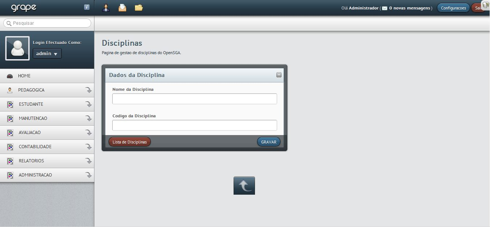

3. Gestão de disciplinas¶
A gestão de disciplinas é uma das funcionalidades mais triviais do OpenSGA. Ela deve ser feita antes que se possa usar o sistema efectivamente para se fazer a gestão académica. Uma disciplina representa apenas um nome que será usado para a criação de turmas e planos de estudos. Em outras palavras, estudantes não estudam em disciplinas, mas sim em turmas que são formadas por disciplinas que por sua vez fazem parte de algum plano de estudos.
No OpenSGA uma disciplina é composta por 3 campos que são:
- O Nome, que representa o principal componente de uma disciplina, uma vez que a partir dele é que identificamos e usamos uma disciplina dentro do Sistema. O nome da disciplina também é usado para dar nome as <Turmas>
- O código, um valor que actualmente não é usado, mas que foi mantido para casos de necessidades no futuro
- A secção ou Grupo de disciplinas a que a disciplina pertence.
Além desses, existe também um código de identificação interna da disciplina, que é usado para referenciar a disciplina em várias partes do sistema.
O nome de uma disciplina é uma entidade única no OpenSGA, ou seja, a palavra Matemática representa sempre a mesma disciplina, independentemente do curso ou do plano de estudo que faça parte num determinado momento. No OpenSGA, Cada disciplina pertence a uma única secção ou a um único grupo de disciplinas. A secção a que a disciplina pertence é usada na hora de definir quais docentes podem leccionar uma dada disciplina, uma vez que cada docente também pertence a uma única secção.
O OpenSGA inclui funcionalidades que permitem criar, editar, visualizar e remover disciplinas. Toda a gestão de disciplinas é feita na secção Pedagógica do Sistema, e é acessivel apenas a usuários com previlégios de Administrador do Sistema.
3.1. Criando disciplinas¶
Para criar uma disciplina, basta acessar a página de cadastro de disciplinas indo em Pedagógica->Disciplinas->Registrar Nova. Todos os campos no formulário de cadastro de disciplinas são obrigatórios e não devem ser iguais a nenhuma das disciplinas já cadastradas no sistema.
Após preencher o formulário, clique no botão gravar para registrar os dados no sistema. Se não existir nenhum problema, os dados da disciplinas serão armazenados na base de dados. Se ocorrer algum erro, o sistema irá indicar o que fazer para ultrapassa-lo.
Este processo deve ser repetido até que todas as disciplinas estejam cadastradas no sistema.
 Figura 1: Interface de Cadastro de Disciplinas
3.2. Editando disciplinas¶
Os dados de uma disciplina podem ser editados, quer seja para mudar o nome, o código ou então a secção ou grupo de disciplinas a que a disciplina faz parte.
Para editar os dados da disciplina, basta acessar a página Pedagógica->Disciplinas e dai clicar no ícone de editar  correspondente a disciplina em questão. Os icones correspondentes as disciplinas listadas encontram-se no canto direito da da tabela de listagem de disciplinas.
correspondente a disciplina em questão. Os icones correspondentes as disciplinas listadas encontram-se no canto direito da da tabela de listagem de disciplinas.
Ao editar os dados de uma disciplina, estes serão verificados novamente para garantir que não existam disciplinas repetidas repetidas no sistema.
3.3. Visualizando disciplinas¶
Para visualizar os dados completos de uma disciplina, incluindo a lista dos cursos que possuem esta disciplina no curriculo e outros detalhes adicionais, clique no icone de visualizar  na mesma linha da disciplina em Pedagógica->Disciplinas.
na mesma linha da disciplina em Pedagógica->Disciplinas.
Todo
Inserir mais dados na página de visualização de disciplinas.
3.4. Removendo Disciplinas¶
Por gerar implicações irreversíveis no sistema, não é permitido remover disciplinas no OpenSGA. Uma vez que uma disciplina é registrada no sistema, ela não poderá mais ser removida, pois esta poderá estar ligada a turmas e planos de estudos que já foram frequentados por estudantes e remover gerará uma quebra total no sistema.
Todo
Adicionar funcionalidade de activar e desactivar uma disciplina em vez de remover
Todo
No futuro poderá se adicionar uma funcionalidade de remover apenas disciplinas não veiculadas a nenhum curso.
Todo
No futuro, não permitir que nomes de disciplinas sejam modificados nem por administradores, para evitar fraudes diversas.